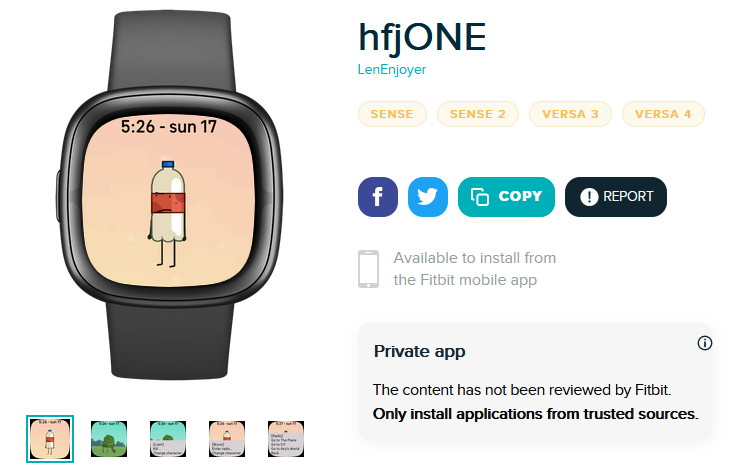
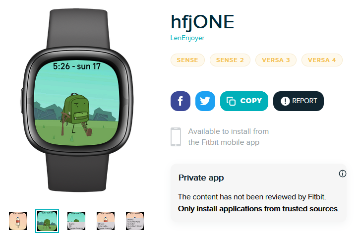
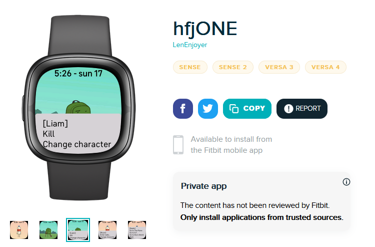
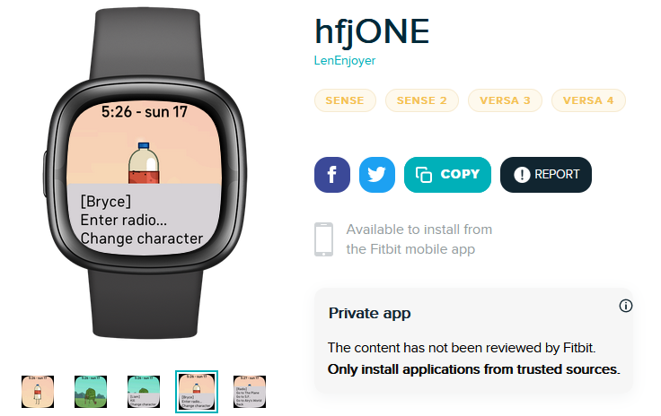
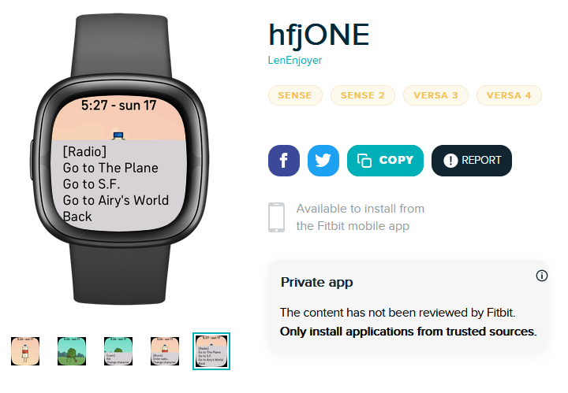

Hello, fellow High Seas voter!
I have coded a Fitbit OS 5 Clockface themed around Cheesy Hfj's object show "ONE".
Odds are, you do not have a Fitbit OS 5 device, and I am really sorry I can't provide a web-based demonstration of this clockface.
If that is the case, please vote based on these screenshots of the clockface, and imagine how heckin cool it'd be to have on your wrist:





Now, if you do have a Fitbit OS 5 device, you can proceed to install the clockface here.
View source